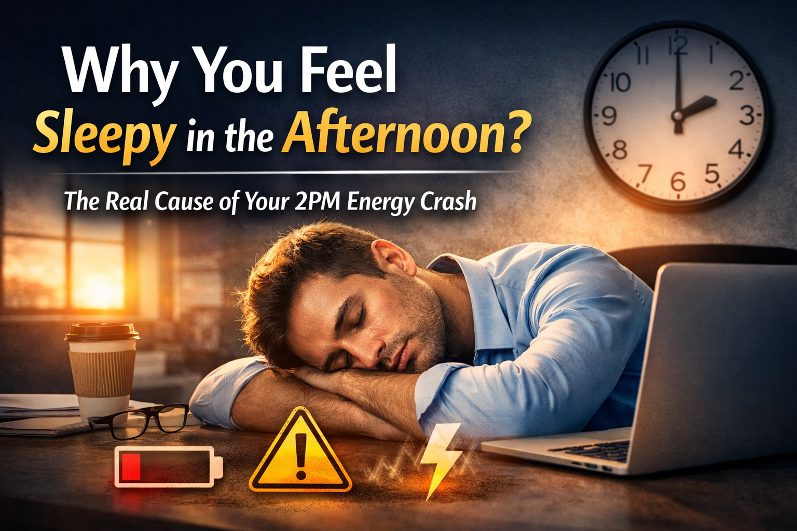

MAR Framework for Mental Reset & Clarity
Modern life constantly overloads your brain with information, stimulation, and distractions. Over time, this leads to mental fatigue, reduced focus, and a persistent feeling of brain fog.
The goal is not to “shut down” your brain—but to reset how it processes stimulation and restore clarity.
The MAR Framework (Minimize, Activate, Reinforce) helps you systematically remove overload, activate brain function, and build long-term focus.
Your brain is not weak—it is overstimulated. Constant scrolling, notifications, and fragmented attention patterns reduce your ability to focus deeply.
This step removes the noise so your brain can recover.
Once overload is reduced, your brain needs activation through proper inputs.
This step improves clarity and mental energy.
Without reinforcement, improvements fade quickly. The goal is to make clarity your default state.
This step locks the upgrade.
Day 1–2: Reduce Noise
Cut unnecessary screen time, reduce social media, and fix sleep timing.
Day 3–5: Activate Brain
Introduce exercise, sunlight, and focused work sessions.
Day 6–7: Stabilize Routine
Maintain consistency and observe improvements in clarity and focus.
1. Do you feel anxious or uncomfortable when your phone is not nearby?
2. Do you spend more than 3 hours daily on social media?
3. Do you need increasing screen time to feel satisfied or entertained?
4. Do you often scroll on autopilot without consciously engaging?
5. Do you feel irritated when you try to reduce screen time?
6. Do you experience increased forgetfulness (names, details, ideas)?
7. Do you find it harder to learn or master complex tasks recently?
8. After interruptions, do you struggle to return to deep focus?
9. Are you unable to focus deeply for at least 1 hour without distraction?
10. Do you struggle to organize thoughts or distinguish similar ideas?
11. Does your mood depend on likes, comments, or notifications?
12. Do you overreact emotionally to minor stressors?
13. Do you often compare your life negatively to others online?
14. Has your self-esteem decreased due to social media exposure?
15. Do constant notifications make you feel anxious or overwhelmed?
16. Do you use screens within 1 hour before sleep regularly?
17. Do you feel groggy or unrefreshed in the morning?
18. Do you lack consistent daily physical activity (~30 min)?
19. Do you rarely experience silence or quiet time during the day?
20. Do you frequently feel mentally sluggish or low in clarity?
Your brain and body are connected. Support your overall health with a complete cholesterol reset system.
Start Heart Reset →Consistency beats intensity. Small daily improvements lead to long-term clarity.
This content is for educational purposes only and does not replace medical advice.

Understand the real reason behind your 2PM energy crash
Receive a personalized 7-day biological reset system.